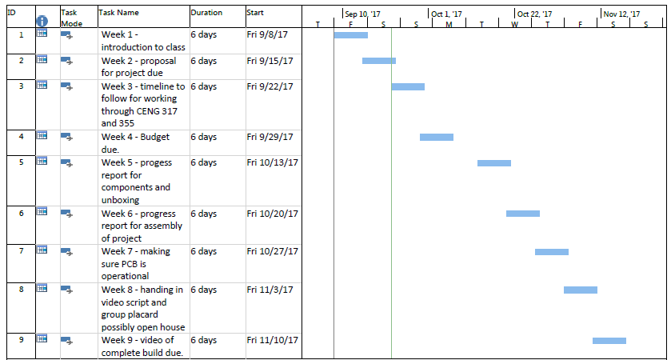
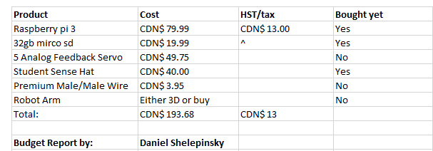

Week 1 Hardware (A - Monday Sept. 11, B - Friday Sept. 8)
Week 2 Hardware (A - Monday Sept. 18, B - Friday Sept. 15)
Week 3 Hardware (A - Monday Sept. 25, B - Friday Sept. 22)
- test, img soon to be here

Week 4 Hardware (A - Monday Oct. 2, B - Friday Sept. 29)
- Budget Due -> trade it for your previously submitted work (rubric).

Week 5 Hardware (A - Monday Oct. 16, B - Friday Oct. 13)
- So far i have gotten the 5 motors, pcb and the PI 3. I also sent my STL files for the robot arm to the prototype lab to be 3D printed.
- Started soldering the PCB
Week 6 Hardware (A - Monday Oct. 23, B - Friday Oct. 20)
- This week is the mechanical assembly milestone for which a graded build log entry is due (rubric).
- Next week is the power-up milestone.
Week 7 Hardware (A - Monday Oct. 30, B - Friday Oct. 27)
- This week is the power-up milestone which will be peer graded (rubric).
- Next week the placard (one per group) is due, post a link to your group's submission on your blog (rubric). A template is available.
- Next week the 30 Second Script is due, this is to help you explain what you have accomplished while demo'ing it for the camera.
- It turns outs that the newest version of Rasbian has realvnc-vnc-server installed by default which conflicts with xrdp. Instead of installing xrdp on your development platform you can install VNC Viewer on your desktop to connect instead of using Remote Desktop Connection. The boot options still need to be set along with ensuring VNC (and I2C) is enabled via Menu > Preferences > Raspberry Pi Configuration > Interfaces and such an image is in the dropbox as before. Please let me know if you have had success purging realvnc-vnc-server and installing then using xrdp.
Week 8 Hardware (A - Monday Nov. 6, B - Friday Nov. 3)
- This week the placard (one per group) is due.
- This week the individual 30 second script is due.
- There was an OpenSCAD demonstration, a laser cutting explanation using Eagle, as well as a MovieMaker demonstration. Alternative: Blender.
- Next week the 30 second build video is due. It should be a concatenation of:
- a 2 second opening title screen with the project and student name,
- a few seconds of the parts that arrived,
- a few seconds of the parts assembly,
- a few seconds of the power up; and,
- a few seconds about the functionality you plan to demonstrate at the open house.
- The open house demonstration will take place in J202. We will have to reconfigure the room (floorplan) and note that some of the power outlets do not work so not all of you will have power. Let me know your table choice next week.
Week 9 Hardware (A - Monday Nov. 13, B - Friday Nov. 10)
- This week the Build Video (as described in week 8) is due including demonstration of functional hardware.
- Next week starts with the submission of an Individual Progress report and continues with the Hardware Demonstration in class or at the
Fall Open House Saturday November 18 10am – 2pm. This will be peer (and guest) graded to an average of 80%.
Week 10 Hardware (A - Monday Nov. 13, B - Friday Nov. 17)
- Progress Report Due, Hardware Demonstration, peer (and guest) graded to an average of 80% in class or at the optional option house.
Week 11 Hardware (A - Optional Saturday Nov. 18)
Fall Open House Saturday November 18 10am – 2pm. Remember to take note of guest feedback and questions to include in your technical report.
- Next week a Progress Report is due.
Week 12 Hardware (A - Monday Nov. 20, B - Friday Nov. 24)
- This week is the milestone for which a graded build log entry is due (rubric).
- Guest Career Advisor visit.
- Discussion of key project attributes to be ready for next term: mechanical, data, test code (eg. sensor read triggers actuator change).
- Please choose a date and time for your individual presentation.
- By the conclusion of this course your project must be suitable for the computer systems project, including mechanical assembly of some type such as an acrylic case and the generic sense hat along with test code.
- Next week a Progress Report is due.
Week 13 Hardware (A - Monday Nov. 27, B - Friday Dec. 1)
- This week is the milestone for which a graded build log entry is due (rubric).
- Regarding testing, up until now we have been mostly doing unit testing with each individual sensor and actuator, at this point you should be doing production testing of the integrated hardware.
- If you have any outstanding questions regarding fasteners please refer to BoltDepot.com which has great fastener information, while visit Wikipedia regarding wire gauge.
- Next week the individual presentation is due - link to the slides from your blog, they are to cover the following topics for 1 minute or less each:
- Introduction (Proposal)
- Budget
- Schedule
- Build Video
- Course knowledge utilized from previous courses
- Please note the information about the presentations, build instructions, and scripts that has already been posted under future weeks and ask any questions you may have this week since from now on it will be quite busy during class time.
Week 14 Hardware (A - Monday Dec. 4, B - Friday Dec. 8)
- This week the Presentation is due, link to the slides from your blog as per the week 12 instructions.
- Individual presentations.
- Next week the Build Instructions are due. The key points to cover are:
- Correct web template usage
- Introduction using a system diagram
- Bill of Materials/Budget
- Time Commitment
- Mechanical Assembly
- PCB / Soldering
- Power Up
- Unit Testing
- Production Testing
- Is the project reproducible by following your instructions?
Week 15 Hardware (A - Monday Dec. 11, B - Friday Dec. 15)
- This week your build instructions are due as per the key points to cover discussed in week 12 and described in my week 13 post.
- Individual presentations (cont.).
- Next week the holiday break begins.
Week 1 Integration (Starting January 9th)
- Welcome back.
- 2016-2017 Projects:
- 1AmbientComputing
- 1Breathalyzer
- 1Industry4.0
- 1Monitoring
- 1PartsCrib, site
- 1RoboticArm
- 1SoftwareControlledDrone
- 1SpeechBuddy
- 1Telematics, site
- 2AutoVehicle, site
- 2FarmBot
- 2LabFlow, site
- 2Octoprint
- 2SmartHive
- 2Solar
- 2Wireless
- The section you attend, are registered in, and are a group member in, must match.
- Introduction to the course outline/blackboard/this site, two main objectives: your project (hardware with enterprise wireless, mobile application, database with web interface) and the matching Technical Report.
- Regarding project choice, students typically proceed with the hardware and mobile application from the prerequisite courses. I am, however, looking for students interested in contributing to an applied research project with Crystal Fountains.
- Markdown: Tutorial.
- References: APA format
- Relevant technical references: visit IEEE's advanced search click on “My Subscribed Content” from on campus, and type your search terms e.g. “iot market” into the search field.
- For next week: your group or you individually must choose the project's github site (belonging to student A), print your proposal to a pdf saved in the repository and hand me (within the first fifteen mininutes of next class) the two relevant pages printed out, the one with the inline citations and one with the references list (/5).
- Having each part of the project present every week (including hardware) is required and forms a portion of that week's deliverable's grade.